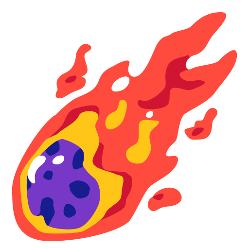

Bolygók
A Naprendszer bolygói és azok érdekességei.

Holdak
A Föld és más bolygók holdjai, valamint felfedezésük.

Csillagok
Az égbolt fénylő csillagai és azok típusai.

Galaxisok
Különböző galaxisok az univerzumban, például a Tejútrendszer.

Fekete lyukak
Az univerzum legerősebb gravitációs objektumai.

Üstökösök
Az üstökösök látványos csóváik és pályáik.